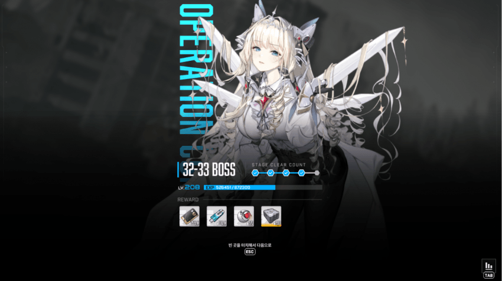
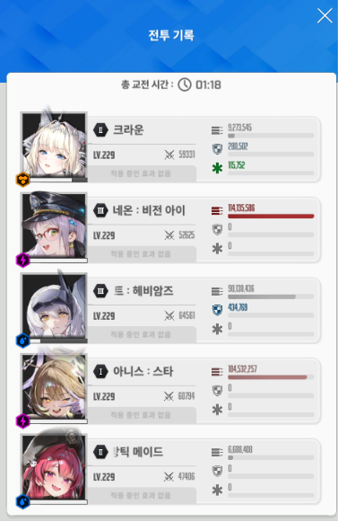
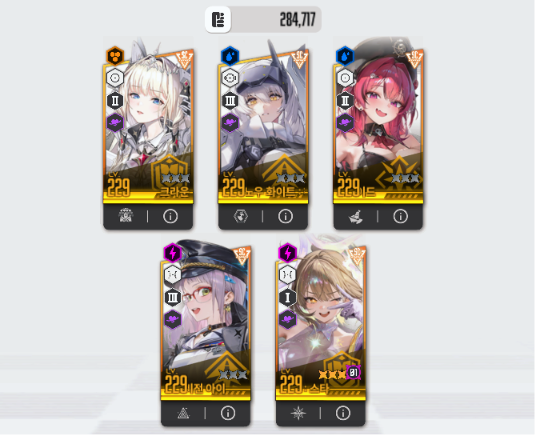

본인처럼 우코가 낮으면 싱크가 높으면 됨
소리, 정보 표시 끄고 그런건 딱히 안해도 되는데 그래픽 들어가서 30프레임 설정은 꼭 해줘야함
미컨 1페 패턴 유리구두 생성 > 파괴 시 따발총x2 - 3회 반복 이후 속성저지 > 족자저지
각설 없는 사람은 헬름이 제일 편함 버충 땡기기 편하고 무엇보다 따발총 엄폐 안해도 됨
버스트는 메크메크메 총 5번 쓰고 네온이 선버, 마지막 버스트는 족자저지 끝나고 써야 함
1. 스쿼드 구성할 때 각설, 헬름, 레후 등등 버충 할 니케를 3번에 두고 시작하자마자 풀차지 후 톡톡이로 빠르게 버스트 진입
버충 요원없이 라피를 넣었다면 아니스 잡고 시작하자마자 차지 땡기셈. 미컨 나오면서 바로 맞음
2. 1페 유리구두는 아니스가 자동으로 깨기 때문에 무시하고 코어 치기
3. 미컨 따발총은 '공격력 제일 높은 니케' 를 쏘기 때문에 네온이 기존 메인덱보다 덜 키워졌다면 다른 3버가 타겟임(각설, 라피 등)
4. 가급적이면 첫번째 따발총은 엄폐 안해도 버텨지는 스펙이면 편함
5. 두번째 따발총은 크라운 2스 조절해서 회피
6. 세번째 따발총은 스쿼드에 헬름 있으면 풀피라서 버텨지고, 아니라면 개별엄폐
크라운 2스 터질 경우 한 사이클만 엄폐 하면 되는데, 잘 모르겠으면 따발총이 크라운 쏘는지 확인하고 엄폐 해제
7. 속성저지는 한쪽만 하고 다른 쪽은 버스트 끝나기 전에 진행
8. 족자저지는 헬름, 각설 등 비우코 SR잡고 풀차지 땡겨서 부수면 됨 (버스트 다 차도 사용X)
9. 족자저지 끝나고 바로 아니스 - 메스트 - 네온 순으로 버스트 켜고 유리구두 전개까지 패서 죽이면 됨
여기서 못 죽이면 딜부족
클리어 예시
실수로 속성저지도 이상하게 하고 족자 전에 버스트 켜서 네온, 메스트 버스트 날렸는데 이런 실수 없이 8,9번만 제대로 지키면 네온이 2페 진입 전에 죽여줄거임